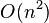

Sorting Algorithms
Selection Sort
Η ταξινόμηση με επιλογή είναι ένας αλγόριθμος ταξινόμησης και συγκεκριμένα ανήκει στους αλγορίθμους με επιτόπια σύγκριση στοιχείων (in-place comparison sort). Τέτοιοι αλγόριθμοι μεταβάλλουν την είσοδο χρησιμοποιώντας μία δομή δεδομένων με μικρό, σταθερό αριθμό επιπλέον αποθηκευτικού χώρου. Η είσοδος συνήθως αντικαθίσταται από την έξοδο κατά τη διάρκεια εκτέλεσης του αλγορίθμου. Η ταξινόμηση με επιλογή έχει χρονική πολυπλοκότητα  κάτι που την κάνει αναποτελεσματική σε μεγάλες λίστες και γενικότερα αποδίδει χειρότερα από τον αντίστοιχο αλγόριθμο ταξινόμησης με εισαγωγή. Εντούτοις φημίζεται για την απλότητα του και τα πλεονεκτήματα που έχει όσον αφορά περίπλοκους αλγορίθμους σε συγκεκριμένες καταστάσεις, ειδικότερα όταν η βοηθητική μνήμη είναι περιορισμένη.
Ο αλγόριθμος διαιρεί την εισαχθείσα λίστα σε δύο μέρη, το υποσύνολο των στοιχείων που έχουν ήδη ταξινομηθεί το οποίο χτίζεται από αριστερά προς τα δεξιά στην αρχή της λίστας, και το υποσύνολο των στοιχείων που απομένουν να ταξινομηθούν το οποίο καταλαμβάνει την υπόλοιπη λίστα. Αρχικά η ταξινομημένη υπολίστα είναι κενή και η αταξινόμητη αποτελείται από ολόκληρη την λίστα εισόδου. Ο αλγόριθμος ενεργεί βρίσκοντας το μικρότερο (ή το μεγαλύτερο ανάλογα με τη σειρά ταξινόμησης) στοιχείο στην αταξινόμητη υπολίστα, ανταλλάσοντάς το με το πρώτο από αριστερά αταξινόμητο στοιχείο (τοποθετώντας το σε σειρά ταξινόμησης) και μετακινώντας τα όρια της υπολίστας κατά ένα στοιχείο δεξιά. Ο αλγόριθμος τερματίζει όταν απομείνει ένα μόνο στοιχείο στην αταξινόμητη υπολίστα το οποίο είναι και ταξινομημένο.
Η ταξινόμηση με επιλογή δεν είναι δύσκολο να αναλυθεί διότι κανένας από τους βρόχους επανάληψης δεν εξαρτάται από τα στοιχεία εισόδου. Η εύρεση του μικρότερου στοιχείου απαιτεί σάρωση όλων των n στοιχείων (n-1 συγκρίσεις) και στη συνέχεια ανταλλαγή με το στοιχείο στην πρώτη θέση. Η εύρεση του επόμενου μικρότερου στοιχείου απαιτεί σάρωση των n-1 υπολοιπόμενων στοιχείων και ούτω καθεξής. Σύμφωνα με τον τύπο της αριθμητικής προόδου χρειάζονται συγκρίσεις και για κάθε σάρωση απαιτείται μία ανταλλαγή για n-1 στοιχεία (το τελευταίο βρίσκεται στη σωστή θέση). Συνεπώς η πολυπλοκότητα οποιασδήποτε περίπτωσης (καλύτερης, χειρότερης, μέσης) είναι η ίδια και είναι ίση με .

Pseudocode
2.
3.
4.
5.
6.
7.
8.
9.
10.
11.
12.
13.
14.end
Applet
Example
Έστω ο πίνακας A=[15 1 7 3 2 25 20 18 30 250] με στόχο να τον ταξινομήσουμε κατά αύξουσα σειρά.
Επανάληψη 1 κατά iΟ δείκτης i γίνεται 0, το ίδιο και η μεταβλητή index.
Επανάληψη 1 κατά jΟ δείκτης j παίρνει την τιμή 1 και ελέγχεται αν το 2ο στοιχείο είναι μικρότερο από το 1ο, κάτι που ισχύει οπότε το index γίνεται 1.
A[1]=1, A[0]=15, 1<15, index=1Επανάληψη 2 κατά j
Το j παίρνει την επόμενη τιμή αυτή τη φορά η συνθήκη ελέγχει αν το στοιχείο στη θέση 2 είναι μικρότερο από το στοιχείο στη θέση 1 όπου και αποτυγχάνει.
j=2, A[2]=7, A[1]=1, 7>1…
Επανάληψη 9 κατά j
Κατά την τελευταία επανάληψη του j δεν αλλάζει η τιμή του index διότι δεν βρέθηκε στοιχείο μικρότερο του 1.
j=9, A[9]=250, A[1]=1, 250>1Μετά την έξοδο από τη δομή επανάληψης γίνεται ανταλλαγή του στοιχείου στη θέση index (A[1] = 15) με το στοιχείο στη θέση i (A[0] = 1). Ο πίνακας είναι ο ακόλουθος.
A=[1 15 7 3 2 25 20 18 30 250]Επανάληψη 2 κατά i
Ο δείκτης i=1 και το index=1 Επανάληψη 1 κατά j
Ο δείκτης αρχίζει να μετράει από την τιμή 2 και κατά σειρά ελέγχονται τα επόμενα στοιχεία για την εύρεση του μικρότερου το οποίο εντοπίζεται στη θέση 4 με τιμή 2.
j=2, A[2]=7, A[1]=15, 7<15 index=2Επανάληψη 2 κατά j
j=3, A[3]=3, A[2]=7, 3<7 index=3
…
Επανάληψη 8 κατά j
J=9, A[9]=250, A[4]=2, 250>2
Έτσι γίνεται ανταλλαγή των στοιχείων 2 και 15 με τον πίνακα Α να ακολουθεί.
A=[1 2 7 3 15 25 20 18 30 250]…
Επανάληψη 9 κατά i
Ο δείκτης i γίνεται 8, το index παίρνει την τιμή του i.
Επανάληψη 1 κατά jΤο μοναδικό στοιχείο που ελέγχεται είναι το τελευταίο το οποίο βρίσκεται στη σωστή θέση και δεν γίνεται καμία αλλαγή. Το αποτέλεσμα είναι το παρακάτω.
A=[1 2 3 7 15 18 20 25 30 250]